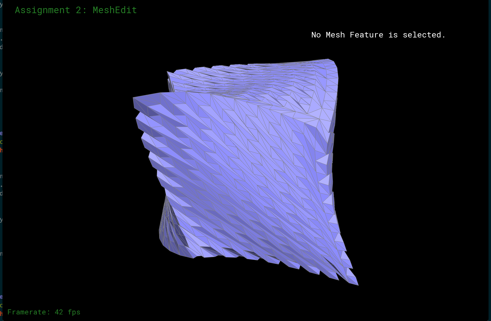
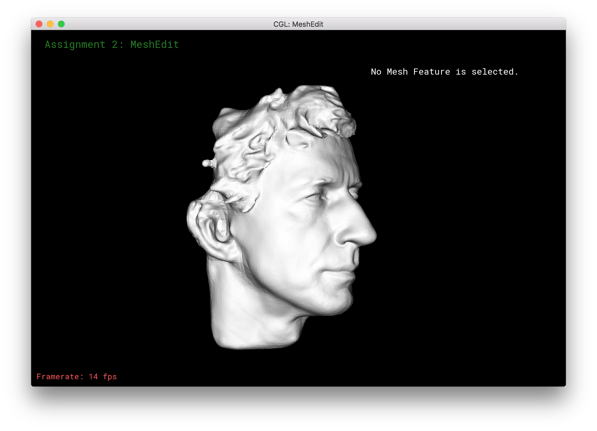
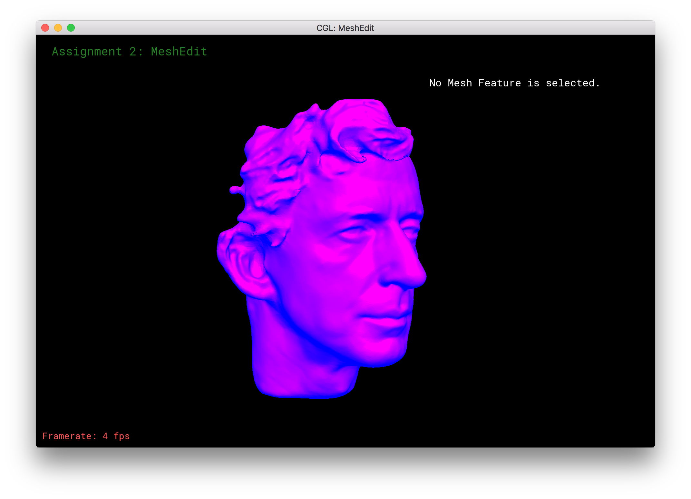
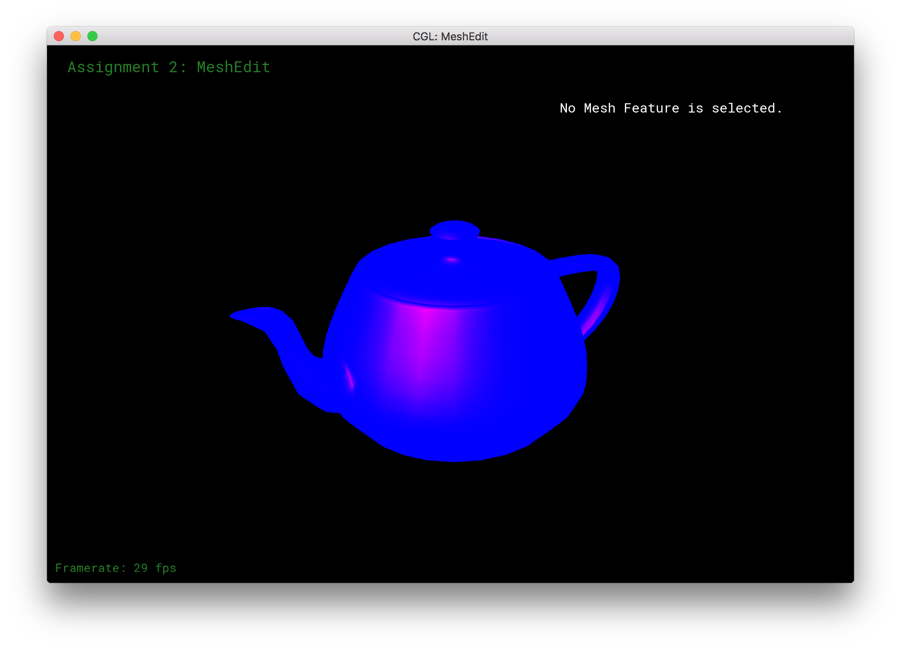
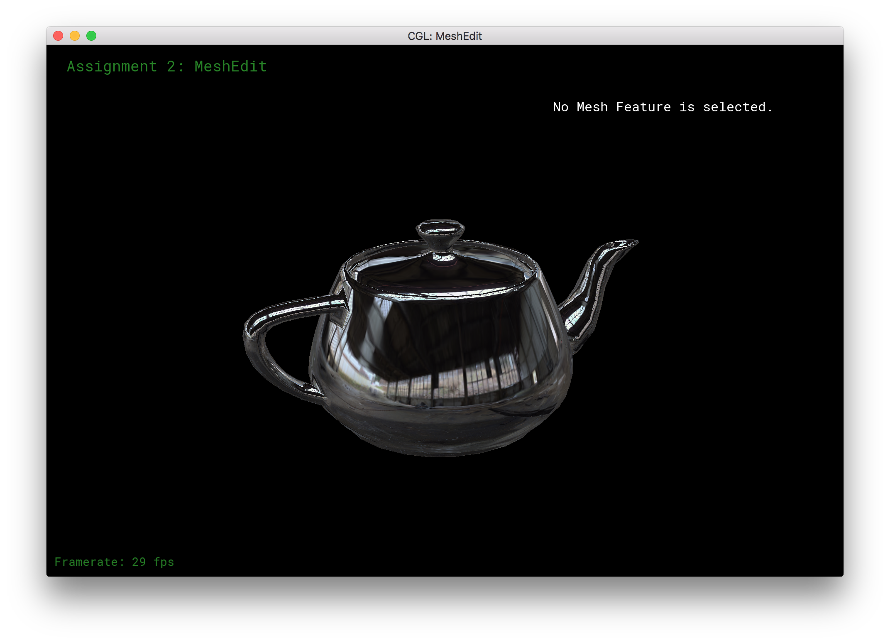

HW 2: GeoMenagerie
Second homework for UC Berkeley's CS184: Introduction to Computer Graphics.
Overview
This assignment taught me the basics of using meshes in computer graphics, as well as some basic shading.
The first step in working with meshes is generating them from Bézier surfaces via triangular approximation.
Then, I gradually implemented the Loop subdivision algorithm which increases the samples in the mesh using subdivision alone.
Finally, I added some shaders using the OpenGL shading language and applied shading to some meshes, including one I designed myself.
Part 1: Fun with Bézier Surfaces
In this part, I triangulated Bézier surfaces to create the meshes shown on the screen.
The way this works is that we start with a Bézier surface that represents the smooth surface of, for example a teapot.
Each point on the 2D Beézier surface can be represented as a tensor product of two Bézier curves.
I sampled this tensor product at 64 points across a grid, and drew triangle faces with samples serving as vertices of these triangles.
The CS184 GSIs wrote a nice interface allowing us to click on components of the mesh and see the memory addresses.
The mesh element information box is at the upper right of the following screen:
Part 2: Average normals for half-edge meshes
The mesh resulting from the triangulation looks a little boxy.
If we want to go for a smoother look, we can average the normal vectors of each face relative to those of the surounding faces.
After averaging the normals, the surfaces loses its boxy edges and looks smoother:
Here is the same process with the mesh information removed and simple shading applied:
Part 3: Edge Flip
Having generated the mesh and having smoothed its appearance, I now wrote two operations to alter mesh elements.
The first of these two is flipping an edge, which prove essential later for upsampling the mesh.
The mesh is written with the Halfedge data structure, named for the halfedge elements which "bind" the entire mesh together.
An example of a halfedge is shown in part 1 -- it's the little half-arrow highlighted on the screen.
To flip the edge, I needed to create a ton of pointers to all of the potentially affected edges, halfedges, and vertices.
Then, I swapped all of them to their new positions, which was quite error prone.
Missing pointers here meant the edge would disappear, or the program would crash due to segmentation faults.
After some debugging, I implemented the seemingly simple operation demonstrated below:
Part 4: Edge Split
The next operation for upsampling is splitting an edge, which means inserting a vertex at the midpoint along with a perpenticular bisector at the vertex.
Implementing this process was similar to above, but much more error prone because I needed to create several new edges and faces.
I encountered two particularly tricky bugs.
The first was setting just one halfedge incorrectly, which caused to edges to infinite loop when I clicked one of the child edges.
The next was not caught until later in part 5, where the new halfedges in the perpendicular bisector pointed the wrong way.
For now, the operation looks as follows:
Note that flipping the altitude of a face that results from a split essentially causes two edges to pile on top of one another:
Here's what the mesh looks like after several splits and flips:
Part 5: Upsampling via Loop Subdivision
Having implemented flipping and splitting edges, we can know upample the mesh, which means introducing more edges and vertices while preserving the geometry of the mesh.
This causes a "higher resolution" mesh, where we are more closely approximating the original Bézier surface.
This is more powerful than simply smoothing the face normals as in part 2 as now we have more "information" about the true geometry that the mesh is approximating.
I implemented the Loop subdivision algorithm, the affects of which are shown below, starting with zero iterations:
One iteration:
Two iterations:
Three iterations:
Four iterations.
Note that the framerates, indicated at the bottom left of each screens, have been dropping with each iteration of the subdivision algorithm.
This is because with each iteration, we have many more edges and vertices to render.
Now we apply Loop subsampling to a cube shown above with few initial vertices and edges.
Because of this fact, unlike the previous example, Loop subsampling will modify the geometry of the mesh, changing it from a cube to a sphere-like object.
One iteration:
Two iterations:
After several iterations, with shading applied:
Implementing Loop subdivision was quite bug prone.
The screenshots below show the consequences of not setting a halfedge correctly when splitting an edge, which went unseen after initially implementing edge splitting.

Part 6: Fun with Shaders
In this part of the assignment, I implemented Phong shading and environment mapping using OpenGL shading language (GLSL).
For both shaders, the basic idea is for each pixel on the mesh, we calculate how lit-up each pixel should be given the lighting vector(s) and the viewing angle relative to that pixel.
For Phong shading, the total radiance equals ambient lighting, plus diffuse lighting, plus specular highlights.
We start with a simple shader (diffuse from eye):

Turning on Phong shading with blue as shadow and magenta as light, we get the meshes below:
If we average surface normals, the shading looks a little smoother and more realistic:

Here is Phong shading applied to our favorite teapot:
This is the specular highlight component of the Phong shading equation, isolated from ambient and diffuse lighting:

On the other hand environment mapping treats the surface of the mesh as a highly reflective surface that is reflecting a surrounding an environment.
Thus, for each pixel, I calculated for each pixel the vector representing a reflective ray out towards the enviroment.
I then mapped these vectors into spherical coordinates, and these coordinates represent the location of a a corresponding texel in the environment texture map.
Those texel values then shade the pixel appropriately.

If we de-average the surface normals, the mesh resembles a disco ball, which is kind of neat.
Part 7: Design your own mesh!
Using the 3D modeling program Blender, I (painstakingly) designed an extremely simple humanoid mesh resembling an inuksuk, a cairn from the cultures of certain Native American tribes in Canada.
I added an isocahedron near its "head" for kicks, an to allude to the titan Atlas from Greek mythology.
This inuksuk was also used as the symbol of the 2010 Winter Olympics in Vancouver, Canada.
Applying Phong shading to the inuksuk:
Applying environment shading revealed an issue with the mesh ....
Applying one iteration of Loop subdivision, the issue with the shading disappears, but now we notice something else odd: the "limbs" separate and part of the shoulder seems to melt.
This happens because I used the extrusion operation in Blender, which, for some odd reason, creates internal faces, vertices, and edges between the extruding object and the object from which it was extruded.
So, when the subdivision algorithm is applied, these seperate meshes "grow" apart.
The same goes for the shoulder, where the right side in the image was created from extrusion.
Giant Atlassian inuksuk says "hello world."